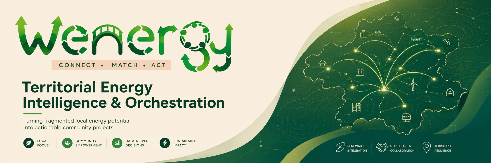

32,628
Screening Opportunities
Wenergy connects local energy needs, renewable and recoverable resources, infrastructure, actors and constraints to identify, explain, prioritise and help advance stronger local clean-energy projects.

The current POC structures evidence across multiple energy pathways. Screening outputs are not feasibility claims; they form the starting point for explainable territorial prioritisation.
Twelve connected chapters cover the problem, solution, market, commercial model, pilot, impact, governance, scalability and roadmap.
The Territorial Energy Execution-Intelligence Gap.
CONNECT • MATCH • ACT and the Project Lens architecture.
Customers, ICP, market structure and regulatory drivers.
Existing ecosystem, white space, differentiation and defensibility.
B2G2C, pilot entry, licensing, pricing and unit economics.
Five-year scenario, operating model and funding strategy.
Real-world validation design and go-to-market evidence.
From upstream decision quality to measured physical impact.
Inclusive territorial energy intelligence and community value.
Evidence-adaptive deployment beyond data-rich territories.
Neutrality, evidence, AI boundaries, privacy and risk management.
Foix → replication → recurring revenue → selective scale.
Real territorial evidence, 8 pathways, actor context, constraints and Project Lenses.
Pricing, willingness to pay, renewal and second-territory repeatability require real pilot evidence.
Qualified professionals validate, engineer and implement. Wenergy orients and connects.
Competition answers are supported by dedicated public evidence files.
Sources, evidence taxonomy, POC metrics and explicit claims boundaries.